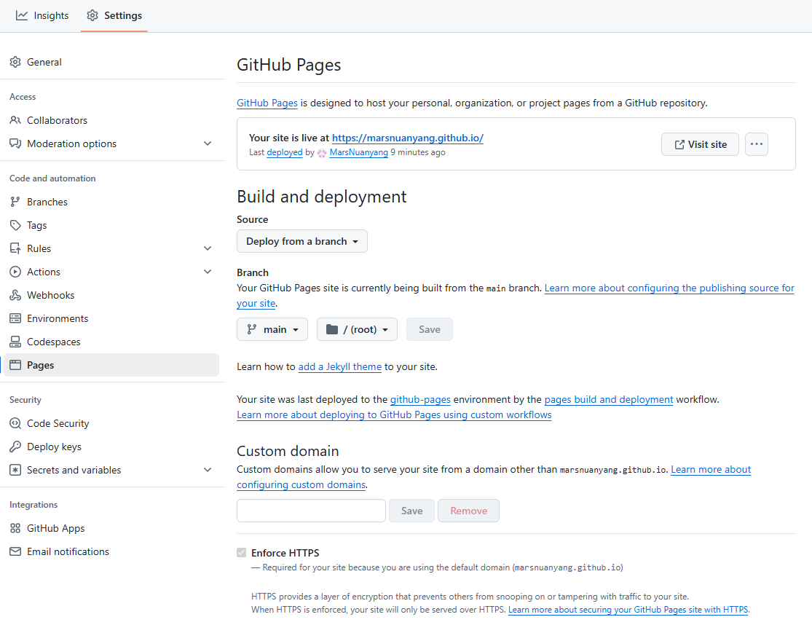
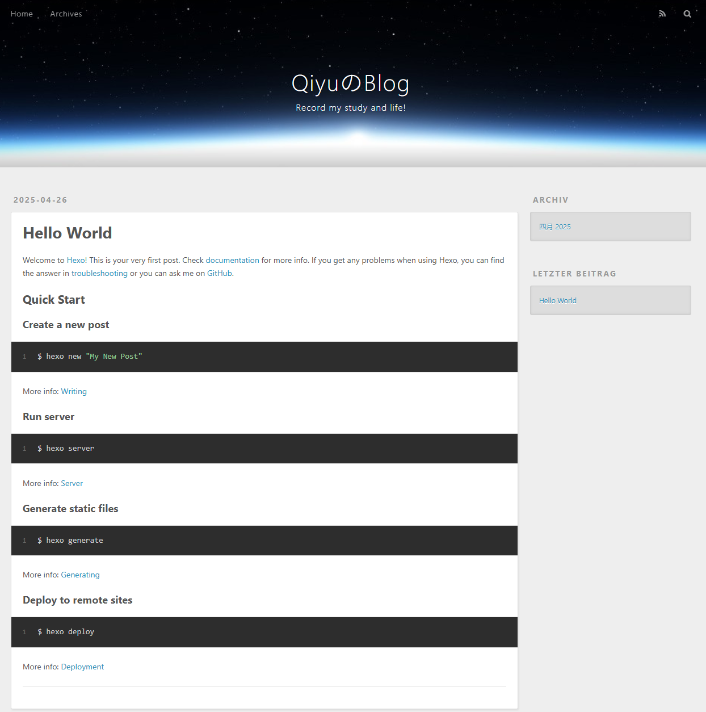
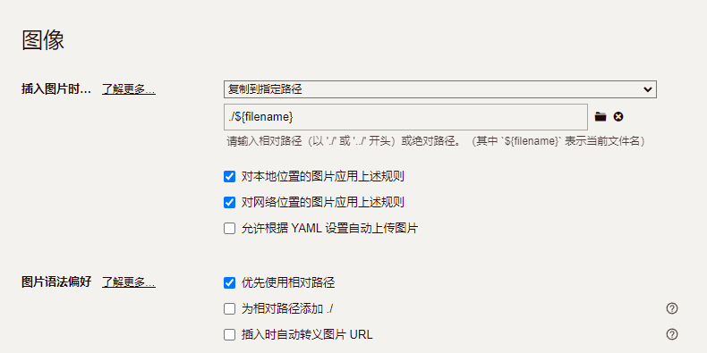

# Hexo# 搭建 Hexo# 安装配置 Nodejs 和 GitNode.js — 在任何地方运行 JavaScript
Git - 安装 Git
Nodejs 相关命令
1 2 3 4 5 6 7 node -v #查看nodejs版本 npm -v #查看npm版本 npm config set registry https://registry.npmmirror.com#npm设置淘宝镜像 npm config set prefix "path " #设置包安装位置 # 使用nvm时记得将下载的包配置到环境变量
Git 相关命令
1 2 3 4 git -v #查看git版本 git config --global user.name "Your Name" #设置Git用户名 git config --global user.email "you@example.com" #设置用户名密码
# 搭建1 2 3 4 npm i hexo -g #全局安装hexo hexo init project #初始化hexo项目 cd projcet #切换项目目录npm i #安装hexo相关依赖
# 配置 Hexo项目介绍
1 2 3 4 5 6 7 title: QiyuのBlog subtitle: 'Record my study and life!' description: 'Welcome to my blog' keywords: 学习 生活 author: Qiyu language: zh-cn timezone: 'Asia/Shanghai'
# 部署到 Github创建用户仓库，必须为 用户名.github.io 例如 marsnuanyang.github.io
在仓库中添加工作流文件.github/workflows/pages.yml（仓库必须为公开）
记下主要版本（例如， v20.y.z ）根据自己的 Nodejs 版本修改，例如将 20 替换为 22
1 2 3 4 5 6 7 8 9 10 11 12 13 14 15 16 17 18 19 20 21 22 23 24 25 26 27 28 29 30 31 32 33 34 35 36 37 38 39 40 41 42 43 44 45 46 47 48 49 50 name: Pages on: push: branches: - main jobs: build: runs-on: ubuntu-latest steps: - uses: actions/checkout@v4 with: token: ${{ secrets.GITHUB_TOKEN }} submodules: recursive - name: Use Node.js 20 uses: actions/setup-node@v4 with: node-version: "20" - name: Cache NPM dependencies uses: actions/cache@v4 with: path: node_modules key: ${{ runner.OS }}-npm-cache restore-keys: | ${{ runner.OS }}-npm-cache - name: Install Dependencies run: npm install - name: Build run: npm run build - name: Upload Pages artifact uses: actions/upload-pages-artifact@v3 with: path: ./public deploy: needs: build permissions: pages: write id-token: write environment: name: github-pages url: ${{ steps.deployment.outputs.page_url }} runs-on: ubuntu-latest steps: - name: Deploy to GitHub Pages id: deployment uses: actions/deploy-pages@v4
# 配置 Hexo 部署信息记得修改分支信息为 main
1 2 3 4 5 deploy: type: git repo: https://github.com/MarsNuanyang/MarsNuanyang.github.io branch: main
# 安装自动部署依赖1 npm install hexo-deployer-git --save
# Github Pages 配置# 效果展示
# Hexo 进阶# Typora 写完博客生成对应文件夹
1 npm install hexo-asset-img --save
# 更改主题https://hexo.io/themes/
选择主题
安装主题
1 git clone https://github.com/henryhuang/oishi.git themes/oishi
修改主题
配置新主题